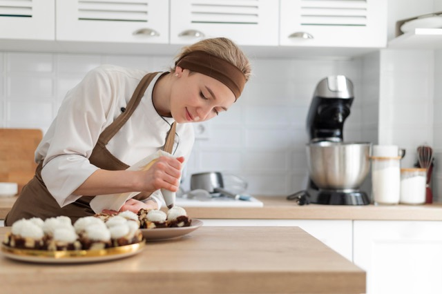
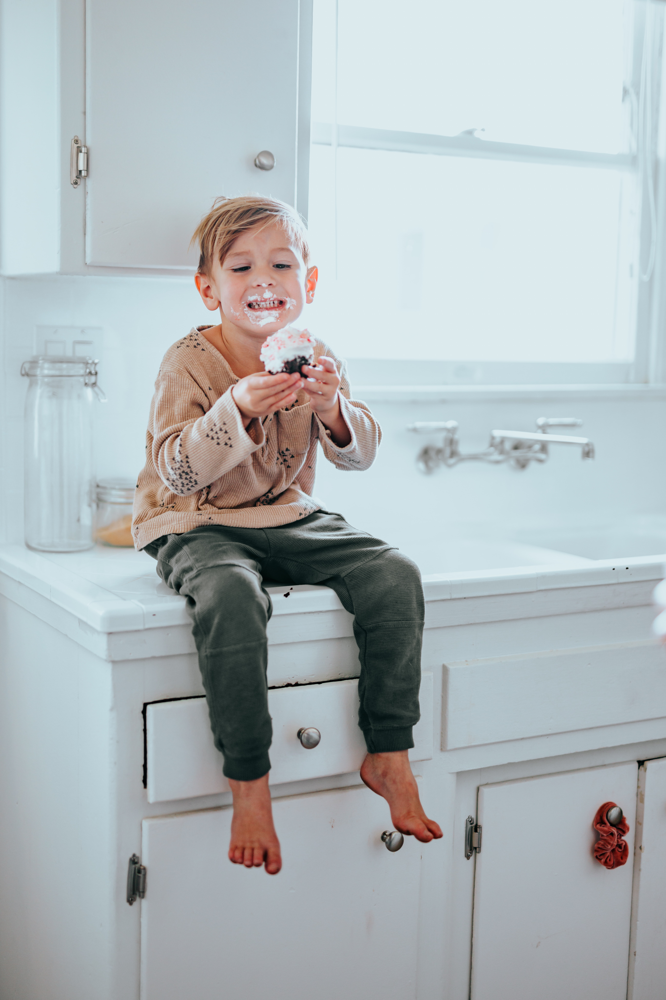

a flavour for every mood
Where it all began...
I grew up with a mom who always believed food was the best medecine. I loved cooking with her, but found my true passion with baking. When I became a mother, I knew I wanted to share my love for the kitchen with my own children. I started baking on the side, making birthday cakes for loved ones or delicious desserts for special occassions. I loved seeing that no matter how someone was feeling, there was always a treat perfectly suited to the situation.
This brought about the idea of Sweet Disposition Bakery, where there's a flavour for every mood. I officially started the bakery out of my own kitchen a year ago while on maternity leave. We've since grown to a storefront at 165 Elgin Street, Ottawa, and have expanded to offer over 100 types of baked goods.
We specialize in custom orders, where it will look, taste, and feel exactly how you want it to. Check out our products to find your next sweet fix!
Shop NowGet to Know the Team
- Rosa Smith
- Head Pastry Chef 
- Joshua Smith
- Sous Chef

- Marcus Smith
- Taste Tester Extraordinaire 